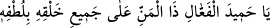

25. Andolsun ki onlara, “Gökleri ve yeri kim yarattı?” diye sorsan, mutlaka
“Allah...” derler. De ki: (Öyleyse) övgü de yalnız Allâh’a mahsustur, ama onların
çoğu bilmezler.
“Andolsun ki onlara” yâni kâfirlere, “Gökleri ve yeri” ulvî ve süflî varlıkları “kim
yarattı?” diye sorsan” bu hususun onlar tarafından itiraf edilecek şekilde son derece
açık oluşundan dolayı “mutlaka” onları “Allah yarattı” derler. De ki:” Tevhidle ilgili
delilleri, nerdeyse kâfirlerin bile inkâr edemeyeceği şekilde ortaya koymasından dolayı
“övgü yalnız Allâh’a mahsustur, ama onların çoğu bunu bilmezler.” Bu sebeple şirki
terk etmek ve yalnız Allâh’a kulluk etmek sûretiyle îtiraflarının gereğini yapmazlar.
26. Göklerde ve yerde ne varsa, hepsi Allâh’ındır. Şüphesiz ki Allah, asıl ganî ve
övülmeye lâyık olandır.
“Göklerde ve yerde ne varsa,” yaratma ve mülk bakımından “hepsi Allâh’ındır.” Bu
yüzden göklerde ve yerde Allah’tan başka kulluk edilmeye müstehak kimse yoktur.
“Şüphesiz ki Allah asıl ganî olandır;” göklerin ve yerin yaratılmasından önce de sonra
da zâtıyla ve sıfatlarıyla ganîdir. Varlığı ve zâtî kemâli itibariyle kesinlikle hiçbir şeye
muhtaç değildir.
Âyette “” lafzından sonra tekrar O’na işâret etmek üzere “ ” zamirinin getirilmesi
” zamirinin getirilmesi
hasr ifâde eder. Yâni o tek başına müstağnîdir, zengindir; O’nunla birlikte müstağnî,
zengin olan kimse yoktur. Nitekim Allah Teâlâ: “Allah zengindir, sizler ise
fakirler/muhtaçlarsınız…” (Muhammed, 47/38) buyurmaktadır.
“Ve” zâtında ve sıfatlarında “övülmeye lâyık olandır.” O’nu öven hiç kimse
bulunmasa da O kendini övücüdür.
Ey kendi mâsivâsından, kendi zâtında ganî olan Allah
Kendi övgünü yine kendin yaparsın.
el-Erbaîne’l-İdrîsiyye isimli eserde şöyle denilir:
“ Ey yaptığı işler sebebiyle nihâyetsiz övgüye layık
olan, lütfuyla bütün mahlukâtına sonsuz in‘âm ve ihsanda bulunan Allâh’ım!” “İmam